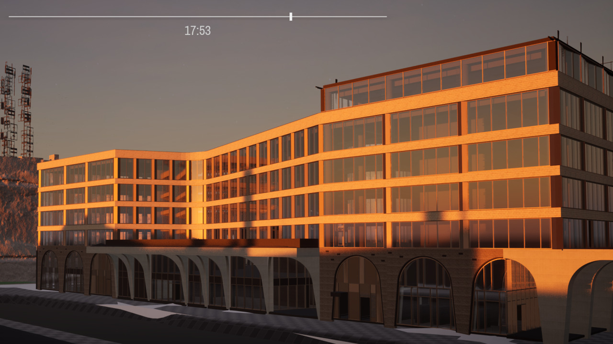
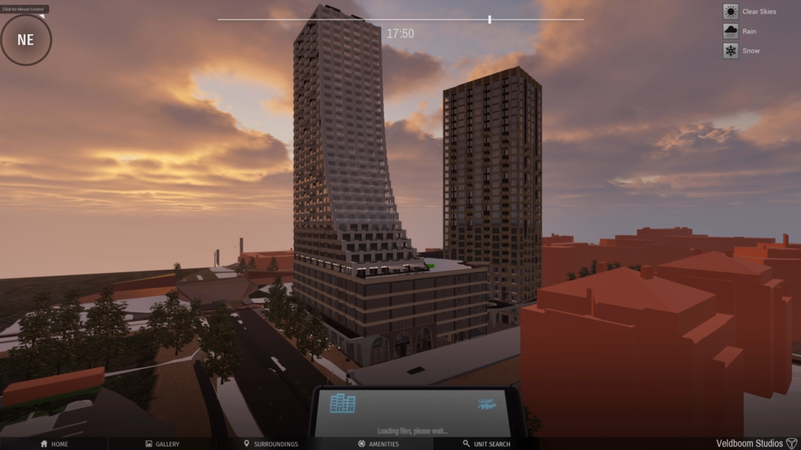
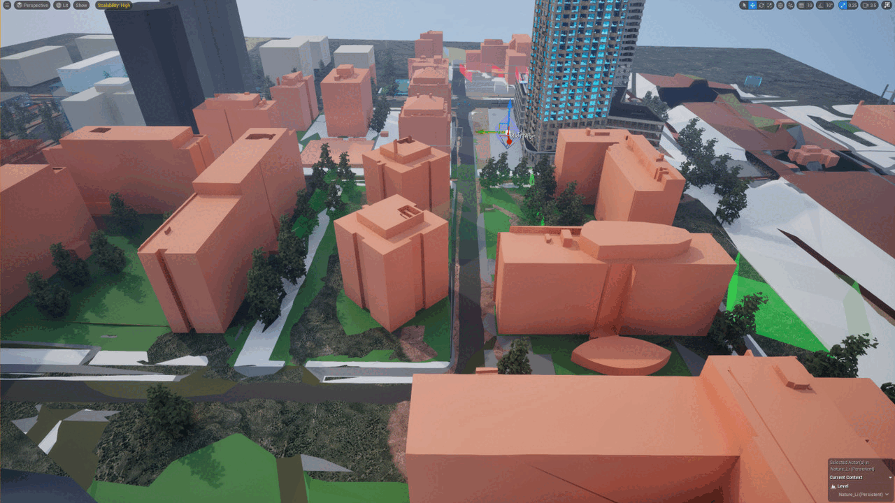
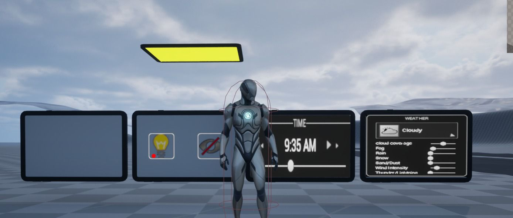
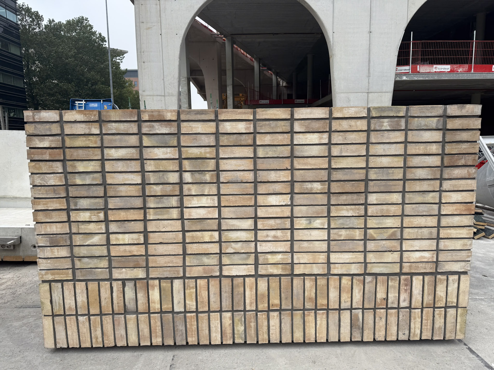
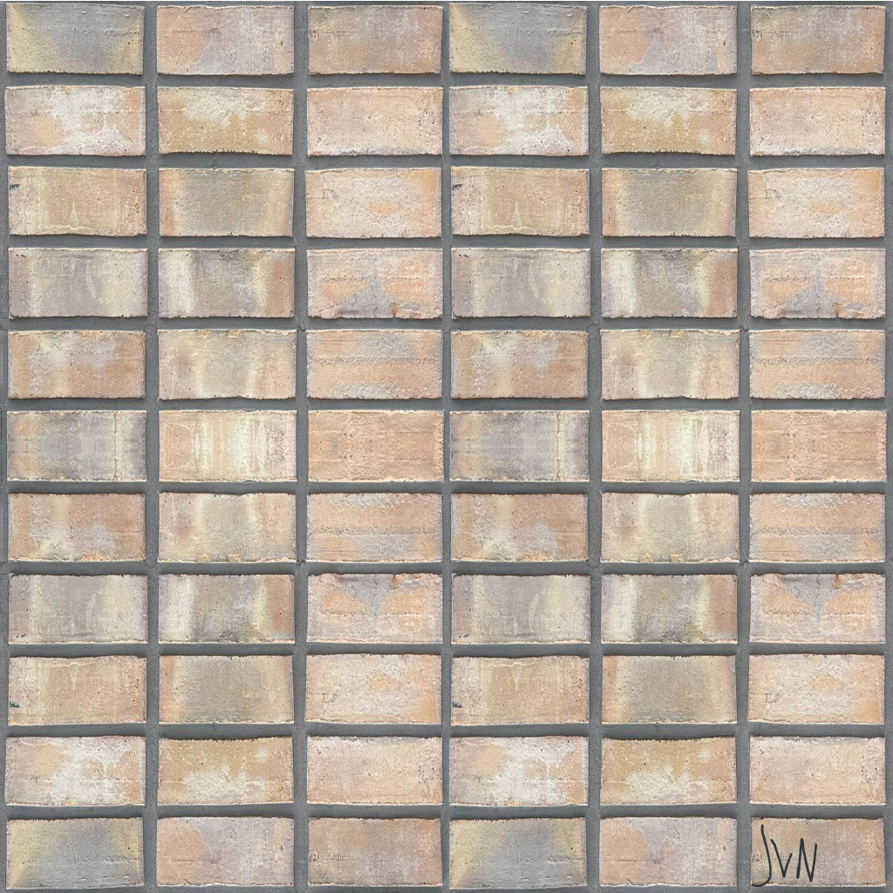
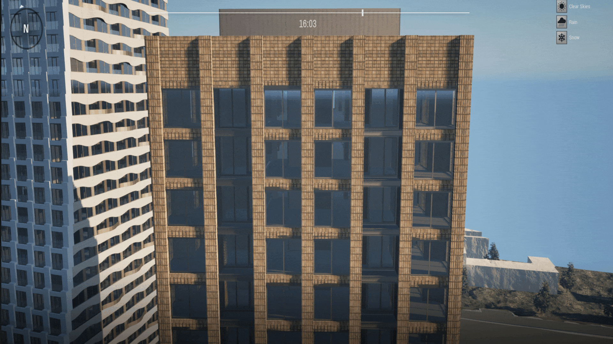

The Ensemble
Project Status: Finished
Project Type: Professional / Freelance
Software Used: UE5, Photoshop
Languages Used: Blueprints
Team: 3 Developers, 1 3D Designer
About this Project
The Ensemble is an architectural visualization project built in Unreal Engine, developed in collaboration with Veldboom Studios for a client. The project spanned nearly two years of intermittent development across three major phases.

Challenges
- Remote workflow
- Source control issues
- Merging multiple frameworks
- Client-driven iterations
Contributions & Highlights
- Interactive UI system(s)
- Component Filter system
- Seamless texture creation
- Environment design (nature)
Intro
Although primarily an ArchViz product, Ensemble became my first large-scale Unreal project,
where I contributed as a Systems / UI programmer, collaborating with 3D artists and other developers.
It remains my most extensive and professional project to date.
My responsibilities grew from early prototyping and feature design to maintaining the technical backbone of the project —
including UI, gameplay-like systems, and Git repository management.

Earliest sketches
Development
Phase 1 – Prototyping (2023)
My first exposure to Unreal after transitioning from Unity. During this phase I sketched and prototyped the UI, beginning with phone/tablet-style interactions. I integrated Ultra Dynamic Sky with custom weather controls, experimented with procedural tools, and familiarized myself with the team’s pipeline (Google Drive chaos).

Phase 2 – Consolidation (2024)
The UI system matured into a utility tablet with features such as weather/time controls, light toggles, and the Component Filter. I took ownership of the GitHub repository and resolved major workflow issues. Extended the ArchViz base framework with custom logic, created seamless brick textures, and designed foliage environments. Reduced the build size from ~8GB to 1.6GB, and delivered the first proper client-facing build.
Component Filter Logic

Enables/disables the visibility & collision of tagged actors.
Phase 3 – Support (Late 2024 – 2025)
While interning at Veldboom Studios, I continued supporting Ensemble with hotfixes and updates. I collaborated directly with the client on reported issues (Blueprint reference fixes, POV switching, etc.), managed final test builds, and handled remote debugging.
Office Spaces

The Component Filter allows toggling between office spaces and regular units.
Conclusion
Ensemble successfully delivered an interactive architectural visualization
that satisfied the client and established a long-term collaboration.
For me personally, the project was:
A crash course in UI/UX prototyping, Blueprint systems, and technical pipelines.
An invaluable experience in teamwork and client collaboration.
A foundation that shaped my later game development projects, especially in system design and prototyping.

Continuation
The client has expressed interest in extending the project into VR.
Visuals & Media
A selection of additional visuals and behind-the-scenes material from the development process.
Environment Design

I was responsible for nature props such as trees and bushes. To preserve performance, I used low-poly assets.
Interactive UI System
Functionalities: lights, filtering, time & weather control.

Final version of the tablet UI, evolved from the smartphone prototype in Phase 1.
Reference photo of a wall in The Ensemble

The wall was irregular and not directly usable as a texture asset.
Seamless 1024x1024 Texture

After adjustments in Photoshop & Lightroom, the texture became uniform and tileable. Exported in Power-of-Two resolution for optimal compression and scalability.
The texture applied to the building in-game.

Showcased under different weather conditions from clear skies to snow.